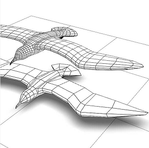
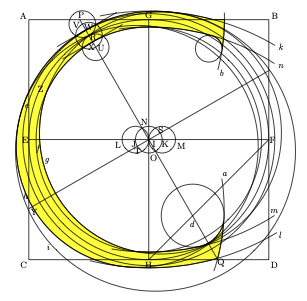
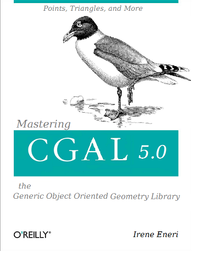
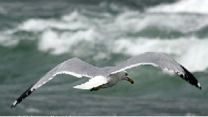
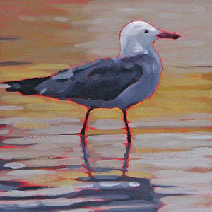
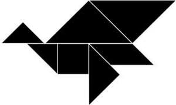
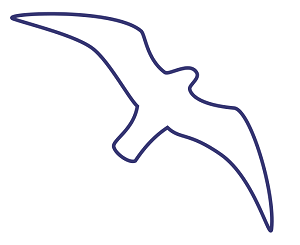

April 1st, 2013

Changing a logo is a big decision, source of controversies and only in the long run we will see if we made a good choice.
As the CGAL Project is an Open Source project, we like transparency and that's why we decided to present you how it came to the new logo, and what alternatives we explored. At the end you will see that the choice we made was simply natural.
As an Open Source project we also would appreciate to get user feeback, as the only people who count for us are you, the users.
The Problem with the Old Logo
The old CGAL logo used letters constructed with compass and rulers, as described in the book written by David Lance Goines: A Constructed Roman Alphabet: a Geometric Analysis of the Greek and Roman Capitals and of the Arabic Numerals. David R. Gordine, Boston, 1982.
" Construct first a square ABCD, and bisect AC at E, BD at F, AB at G, and CD at H. Draw the straight lines EF and GH, thereby establishing a point I at their intersection. From the center I, describe a circle JIK on EF, the diameter of which is one-ninth the distance AB. Using that same radius, describe a circle LJI, thereby establishing a point N on the perimeter of the circle I. ....... "

Although CGAL developers liked these constructions a lot, the CGAL Editorial Board had to make a drastic change. An opinion poll performed among decision makers in the computer graphics industry during Siggraph 2012 showed that the CGAL project started to be perceived as old fashioned.
Idea
Several desperate brain storming sessions later, the breakthrough idea came by coincidence, when we met Madeleine Ouette, the cover designer at O'Reilly, in order to choose the animal for the upcoming CGAL book. For Madeleine a seagull was the most natural choice as the word is a homophone for CGAL, and we were lucky that it was not already taken.
A quick word on the book: It is about CGAL 5.0 which will be released in September 2013. The change of the major release number is due to the fact, that we fully exploit the features of C++11, that is lamdas, the auto type, variadic templates, decltype, etc. This will lead to some compilers no longer being supported, and some CGAL users having to revise their C++ language skills (hence the book), but it leads to a phenomenal clarity and elegance of the CGAL APIs. We simply had to do it.

A Drawing is Not a Logo
Having the seagull on the CGAL book, and the fact that this bird is elegant and dynamic, led to the decision to come up with a "seagull" logo. We were tempted to simply take the drawing of the O'Reilly CGAL book, but this was impossible because O'Reilly considers these drawings as part of their brand. The next idea was to find a cool picture of a seagull flying through a stormy sky.

Luckily we contacted an expert in logos and brand development.
"A logo is an abstraction" explained Mark Höwe, Chief Creative of
the web agency Haatchi&Haatchi, and he illustrated what he meant
with the image below.

"CGAL is not a zoo, right!" Mark said, and he continued
"Was CGAL an application like Picasa, inkscape, or gimp, a painting would
have been a serious option."
Here we are in 3D.
We see quad meshes flying rapidly over a terrain model.
Additionally, we see the mesh at two levels of detail.
"In a world of devices ranging from smartphones, over tablets,
to workstations with huge screens, multi resolution algorithms are key!"
according to Mark, and he added "As Samsung Maps and Huawei Maps also enter
the market of GIS for the masses, a logo with a terrain model, makes
absolute sense for a geometry library like CGAL."
If CGAL was only 2D algorithms this tangram would have worked too. "The fact that it is composed of basic shapes which can be recombined in an unlimited number of ways captures the essence of CGAL." Mark said.

The outline is easy to recognize, but because it can be seen on many windows to avoid real birds hitting the window, it is almost impossible to establish a new connotation between the shape and the geometry library.
